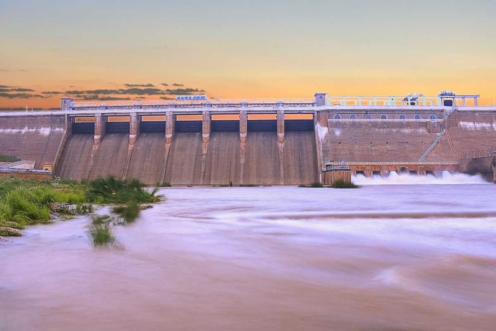
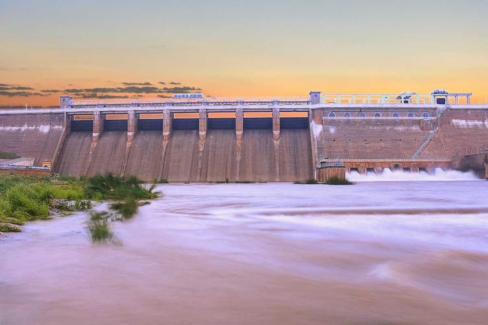

Meenakshi Amman Temple
Meenakshi Amman Temple, located in Madurai, Tamil Nadu, is one of the most renowned temples in India, known for its magnificent Dravidian architecture, towering gopurams (gateway towers), and deep spiritual significance. Among the many festivals celebrated here, Theppotsavam, also known as the "Float Festival," is one of the grandest and most vibrant events. This annual festival involves placing the idols of Goddess Meenakshi and Lord Sundareswarar on a beautifully decorated raft (Theppam) and floating them in the Vandiyur Mariamman Teppakulam, a large temple tank. The festival symbolizes the divine journey of the deities, with thousands of devotees gathering to witness the sacred event. Taking place in January or February on the full moon day (Pournami) of the Tamil month of Thai, the festival begins with a grand procession where the idols are carried through the streets accompanied by music, dance, and chariots. The raft is adorned with flowers and lights, creating a mesmerizing spectacle as it floats on the serene waters. Devotees chant hymns and offer prayers, believing that participating in the festival brings blessings and prosperity. The entire temple is illuminated, making it a breathtaking sight and a major attraction for tourists and pilgrims alike. Theppotsavam not only holds immense religious significance but also highlights Tamil Nadu's rich cultural and traditional heritage, making it a must-visit event for those seeking both spiritual and visual grandeur.
Known for its towering gopurams, intricate carvings, and spiritual aura, the temple attracts thousands of devotees and tourists daily. The temple complex is spread across 14 acres and is an excellent example of Dravidian architecture.


 
